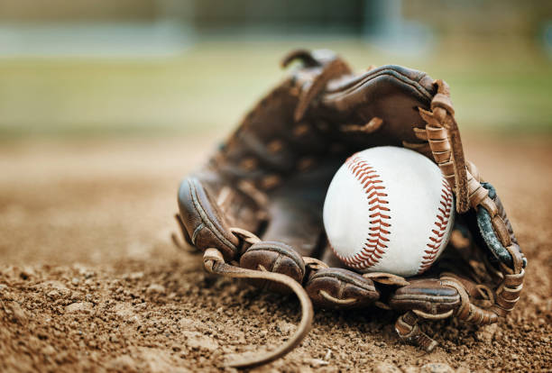
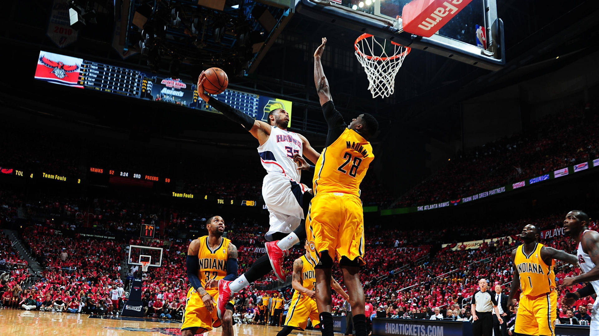
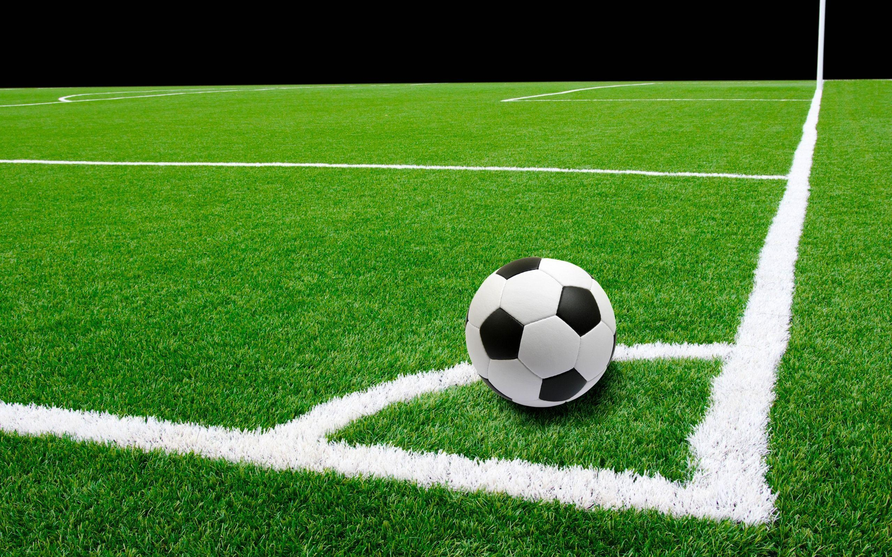
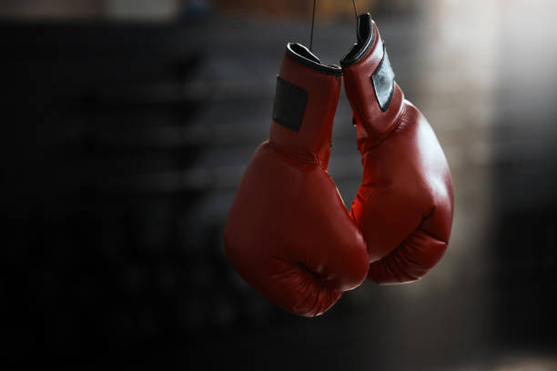
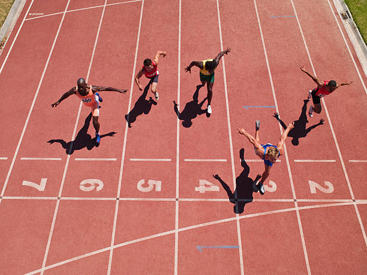

Creación del béisbol
El béisbol se originó en el siglo XIX en Estados Unidos. Evolucionó a partir de juegos europeos como el rounders. Se convirtió en un deporte organizado con reglas definidas. En 1846 se jugó uno de los primeros partidos oficiales. Con el tiempo se establecieron ligas profesionales. Se definieron posiciones y normas claras de juego. El béisbol se expandió a América Latina y Asia. Fue adoptado por muchos países. Se crearon campeonatos internacionales. La MLB se convirtió en una de las ligas más importantes. La Confederación Mundial de Béisbol regula competencias internacionales. Así nació el béisbol como deporte oficial.
Récords en el béisbol
Los récords en béisbol representan las mejores estadísticas logradas por jugadores. Existen récords de jonrones, hits y ponches. Solo se validan en competencias oficiales. Deben cumplirse reglas estrictas para que sean aceptados. Uno de los récords más famosos es el de Barry Bonds en jonrones. También hay récords de lanzadores destacados. Cada liga mantiene sus propias estadísticas. Los récords motivan a los jugadores a mejorar su rendimiento. Son supervisados por árbitros y comités oficiales. La MLB y la WBSC regulan estas marcas. El uso de sustancias prohibidas invalida cualquier récord. Algunos récords permanecen por décadas. Romper un récord es un logro histórico.
Información general del béisbol
 |
 |
|
 |
 |